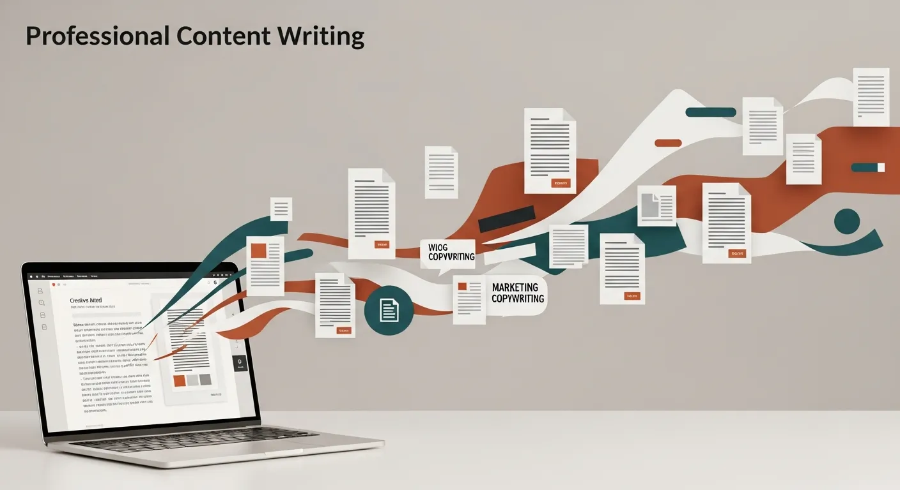

Message match
The page has to match the reason the visitor arrived.
Conversion rate optimisation
CRO is the first place to look when paid ads are not working. If the page cannot convert organic and referral visitors, buying more traffic only makes the leak more expensive.
Package
Octopye reviews and improves the page most likely to create enquiries: homepage, service page, landing page, or contact page.

What changes
The page has to match the reason the visitor arrived.
Pricing anchors, audit options, and support details reduce hesitation.
The visitor sees what happens next before they decide to leave.
Organic conversion
This is the most sensible fix when enquiries are zero and ad spend feels wasted.